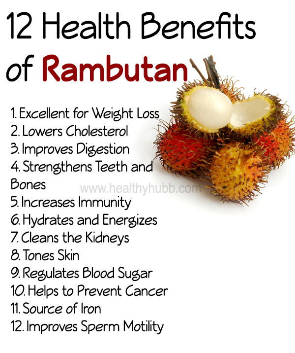

| There are many health benefits to eating rambutan, as it contains many vitamins. They also taste very sugary without containing that much sugar, making it a very good snack. They are known to be high in fiber and even have the ability to kill intestinal parasites. Here is are some other things rambutan can be good for. |
|---|
|  |
Link back: Here